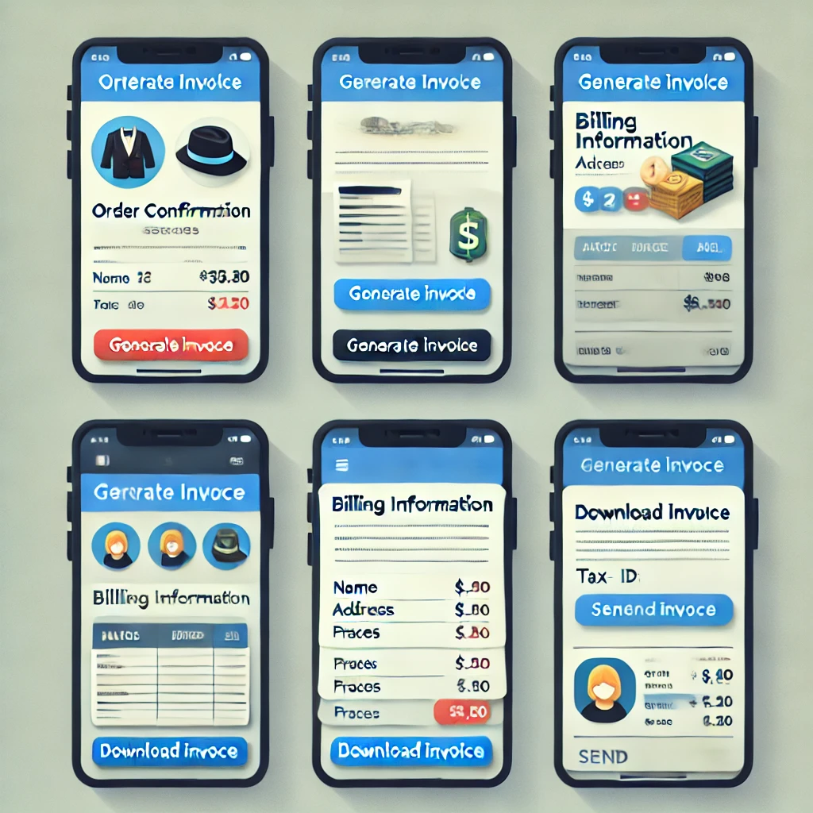

Cómo Recibir una Factura después de Realizar una Compra

- Finaliza tu compra:
- Completa el proceso de compra normalmente, incluyendo el paso de pago y confirmación del pedido.
- Selecciona la opción de factura:
- Al finalizar la compra o durante el proceso de pago, busca una opción que diga “Solicitar factura” o “Datos para facturación”. Esto puede aparecer como una casilla que puedes marcar para indicar que necesitas factura.
- Proporciona los datos de facturación:
- Completa los campos necesarios para la factura, como:
- Nombre o razón social: Nombre de la persona o empresa que recibirá la factura.
- RFC (si estás en México): Clave de Registro Federal de Contribuyentes, en caso de que sea un requisito.
- Dirección fiscal: Dirección asociada a la facturación, puede ser distinta de la dirección de envío.
- Correo electrónico: Asegúrate de que sea válido, ya que la factura se enviará allí.
- Revisa la confirmación de la solicitud de factura:
- Después de ingresar los datos, confirma que la solicitud de factura fue registrada. Normalmente, recibirás un mensaje en la página o un correo de confirmación indicando que tu solicitud fue recibida.
- Recibe la factura por correo electrónico:
- Una vez que se procese la solicitud, recibirás la factura electrónica en el correo que proporcionaste. El tiempo de envío de la factura puede variar, pero generalmente se envía dentro de unas horas o hasta 24 horas después de la compra.